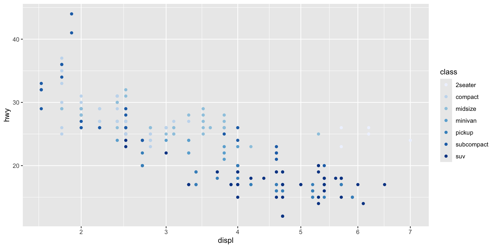
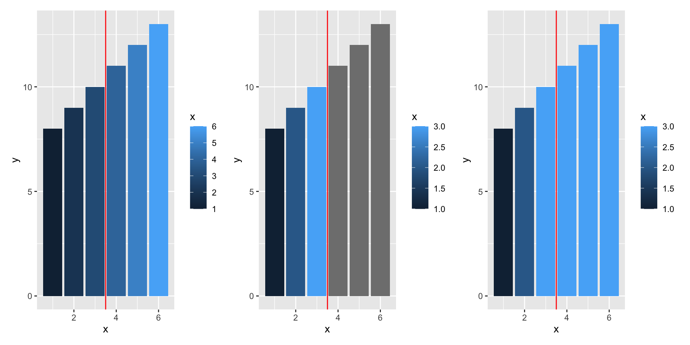
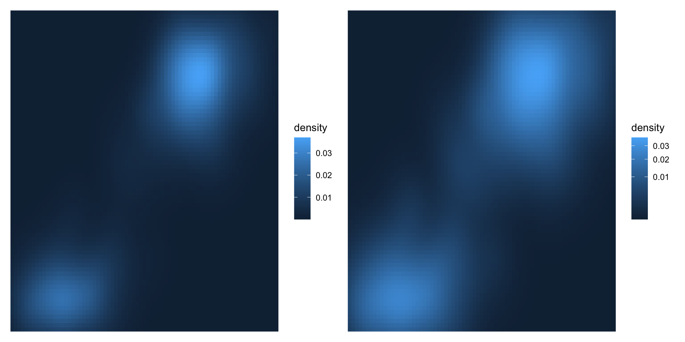
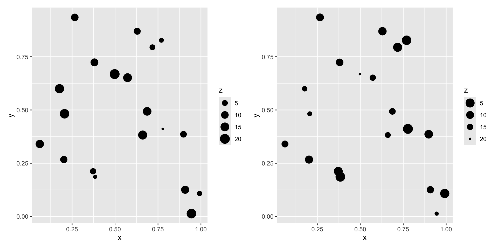
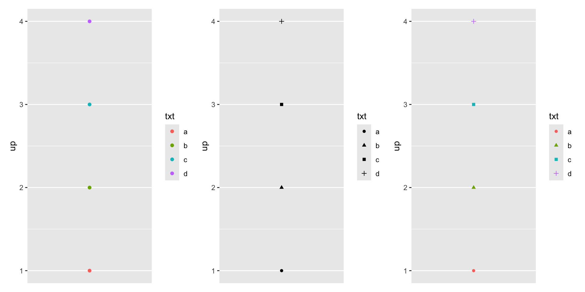
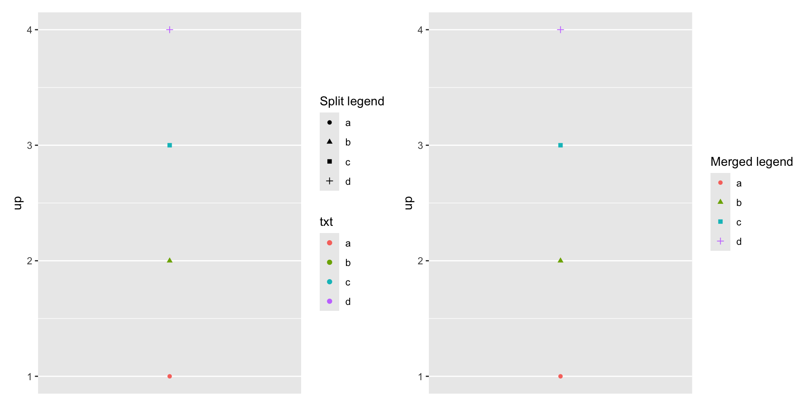
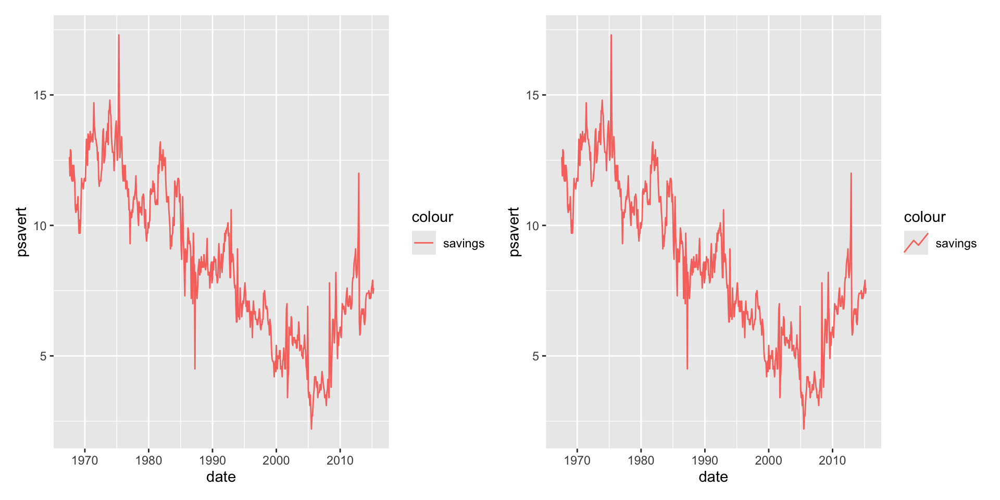

Data Analysis
Chapter 14: Scales and Guides
Shih Chien University
2026-06-05
Scales and Guides
Overview
The scales toolbox in Chapters 10–12 solved practical visualisation problems. This chapter steps back to the theory that underpins scales and guides, showing that ideas introduced for position or colour scales apply across every aesthetic.
This chapter covers:
- Theory — scales as functions from data space to aesthetic space, and guides as their inverse
- Scale names — axis labels and legend titles as the same object
- Breaks and limits — the values a guide displays, and out-of-bounds handling
- Scale guides — the default guide for each scale type
- Transformations — transforming non-position aesthetics
- Legend merging and splitting — and customising legend key glyphs
Theory of Scales and Guides
Scales and Guides
Formally, a scale is a function from a region of data space (its domain) to a region of aesthetic space (its range). The guide — an axis or a legend — is the inverse function: it lets you read visual properties back to data values.
It may surprise you that axes and legends are the same kind of thing. They look very different but share one purpose, and their components line up:
| Argument | Axis | Legend |
|---|---|---|
name |
Label | Title |
breaks |
Ticks & grid lines | Keys |
labels |
Tick labels | Key labels |
Legends are more complex than axes in three ways:
- A legend can display multiple aesthetics (e.g. colour and shape) from multiple layers, and the key symbol depends on the geom used.
- Axes always appear in the same place; legends can be positioned anywhere, so they need a global positioning system.
- Legends have many tweakable details: orientation, number of columns, key size.
Scale Specification
Every aesthetic is associated with exactly one scale. When you write a mapping, ggplot2 silently adds a default scale for each aesthetic:
The default depends on the aesthetic and the variable type: a continuous hwy on y yields scale_y_continuous(); a discrete class on colour yields scale_colour_discrete().
Adding a scale with + actually overrides any existing scale for that aesthetic — the last one wins. ggplot2 warns you when this happens:

Here scale_x_sqrt() replaces the default x scale and scale_colour_brewer() replaces the default colour scale.
Naming Scheme & Fundamental Types
User-facing scale functions follow a three-part naming scheme separated by _:
scale- the primary aesthetic (
colour,shape,x, …) - the name of the scale (
continuous,discrete,brewer, …)
Internally, all scales belong to one of three fundamental types, each built by a constructor you should never need to call directly:
| Fundamental type | Constructor |
|---|---|
| Continuous | continuous_scale() |
| Discrete | discrete_scale() |
| Binned | binned_scale() |
Scale Limits
Scale Limits
Scale limits define the region of data space over which the mapping is defined. The region differs by fundamental type: continuous and binned scales are defined by two end points, while discrete scales must enumerate their categories.
This raises a question: what should ggplot2 do with out-of-bounds values that fall outside the limits? The behaviour is governed by the oob argument:
scales::oob_censor()(default) — replace out-of-bounds values withNAscales::oob_squish()— squish out-of-bounds values into the range

Left: default fill. Middle: the three rightmost bars fall outside limits = c(1, 3) and become grey NA. Right: oob = scales::squish clamps them into range instead.
Scale Guides
Scale Guides
Where name takes text, the guide argument takes a guide object created by a guide function. Each scale type has a default guide:
| Scale type | Default guide |
|---|---|
| continuous colour/fill | guide_colourbar() |
| binned colour/fill | guide_coloursteps() |
| position scales | guide_axis() |
| discrete (non-position) | guide_legend() |
| binned (other) | guide_bins() |
Each guide function carries many arguments — equivalent to theme settings (text colour, size, font) but scoped to a single guide. Those settings are covered in Chapter 17.
Scale Transformation
Scale Transformation
Scale transformations are most common on continuous position scales (§10.1.7), but they apply to other aesthetics too. Often the purpose is visual emphasis. For the Old Faithful density, a square-root fill transform reveals the low-density regions around each peak:

Transforming a size aesthetic changes its interpretation. On the left, z reads as a weight (larger = bigger group); reversing the scale makes z read as a distance (larger = appears smaller):

Legend Merging and Splitting
Merging Legends
Position scales correspond one-to-one with axes, but the link between non-position scales and legends is looser: one legend may draw from multiple layers (merging), or one aesthetic may need multiple legends (splitting).
ggplot2 uses the fewest legends possible, combining those where the same variable is mapped to different aesthetics. If both colour and shape map to the same variable, a single legend results:

For legends to merge they must share the same name. If you rename one scale, rename them all — labs() is a convenient way to do so:

You can also force or suppress a layer’s appearance with the show.legend argument (TRUE/FALSE).
Splitting Legends
Splitting is much rarer — mapping one aesthetic to two variables is usually inadvisable, so ggplot2 disallows it by default. The ggnewscale package overrides this: new_scale_colour() initialises a fresh colour scale. Commands above it apply to the first scale; commands below it apply to the second.
base <- ggplot(mpg, aes(displ, hwy)) +
geom_point(aes(colour = factor(year)), size = 5) +
scale_colour_brewer("year", type = "qual", palette = 5)
base +
ggnewscale::new_scale_colour() +
geom_point(aes(colour = cyl == 4), size = 1, fill = NA) +
scale_colour_manual("4 cylinder", values = c("grey60", "black"))Legend Key Glyphs
Legend Key Glyphs
By default the glyph in a legend key matches the layer and aesthetic — coloured lines show up as coloured line segments, boxplots as small boxplots. To override this, use the key_glyph argument:

Each geom has an associated key-drawing function such as draw_key_path() or draw_key_timeseries(). You may pass the function directly: key_glyph = draw_key_timeseries.
Exercises
Take
ggplot(mpg, aes(displ, hwy)) + geom_point(aes(colour = class))and write out the three default scales that ggplot2 adds for you. Why is specifying them manually tedious?Build a
geom_col()chart withaes(fill = x)andscale_fill_gradient(limits = c(1, 3)). Compare the defaultoobwithscales::squish. When is each appropriate?List the default guide for each fundamental scale type. Which guide is shared by continuous, binned, and discrete position scales?
Reproduce the Old Faithful
faithfuldraster with and withouttrans = "sqrt"on the fill scale. What does the transformation make easier to see?Using the
toydata, create one plot wherecolourandshapemap to the same variable and one where they map to differently named scales. Explain when legends merge.Use
ggnewscale::new_scale_colour()to overlay twogeom_point()layers onmpgwith separate colour scales. Why does ggplot2 disallow splitting by default?Compare
geom_line()with the default glyph againstkey_glyph = "timeseries"on theeconomicsdata. What other key-drawing functions can you find?
Acknowledgement
Copyright notice. These teaching materials have been adapted from ggplot2: Elegant Graphics for Data Analysis (3e). All rights are reserved by the original authors and publishers.
Non-commercial use only. These materials are strictly intended for educational purposes and must not be used for commercial gain or profit.
Proper attribution. Any reproduction, distribution, or use of these materials must provide proper attribution to the original source.
References

ggplot2: Elegant Graphics for Data Analysis